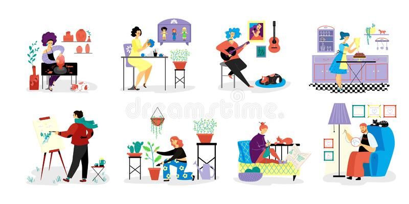

Who I Am
I am Kanchana Maleesha Kumari Atapattu, Currently live in Welimada town in Uva Province, Sri Lanka. I am an undergraduate student in SLIIT Campus in Sri Lanka.
I am Kanchana Maleesha Kumari Atapattu, Currently live in Welimada town in Uva Province, Sri Lanka. I am an undergraduate student in SLIIT Campus in Sri Lanka.
Currently I am an undergraduate student in SLIIT Campus in Sri Lanka.
Passed General Certificate of Education Advanced Level in year 2019. Passed General Certificate of Education Ordinary Level in year 2014.
I am capable of handling computer. I have knowledge in computer Ms-Excel,Ms Widows,Ms-Office and well conversant with internet. I am good at singing and also I have completed Diploma about Classical music. In Year 2010 I have won the first place for the Uva Provincial compititon of All Island school Music and Drama in the open category. In year 2013 I have won Certificate for All Island compitition on scientific observations understanding the world through Science. I have followed an English Certificate course in Sabaragamuwa University of Sri Lanka.
I am good listener and I have positive attitude.And also I have pleasant personality. I am interested in reading Adventures Stories and novels. Watching movies,listening to music and gardenning are just some of the activities I do during my free time.
My future ambition is to make my graduation dream come true and get a job that matches my educational qualifications and skills.